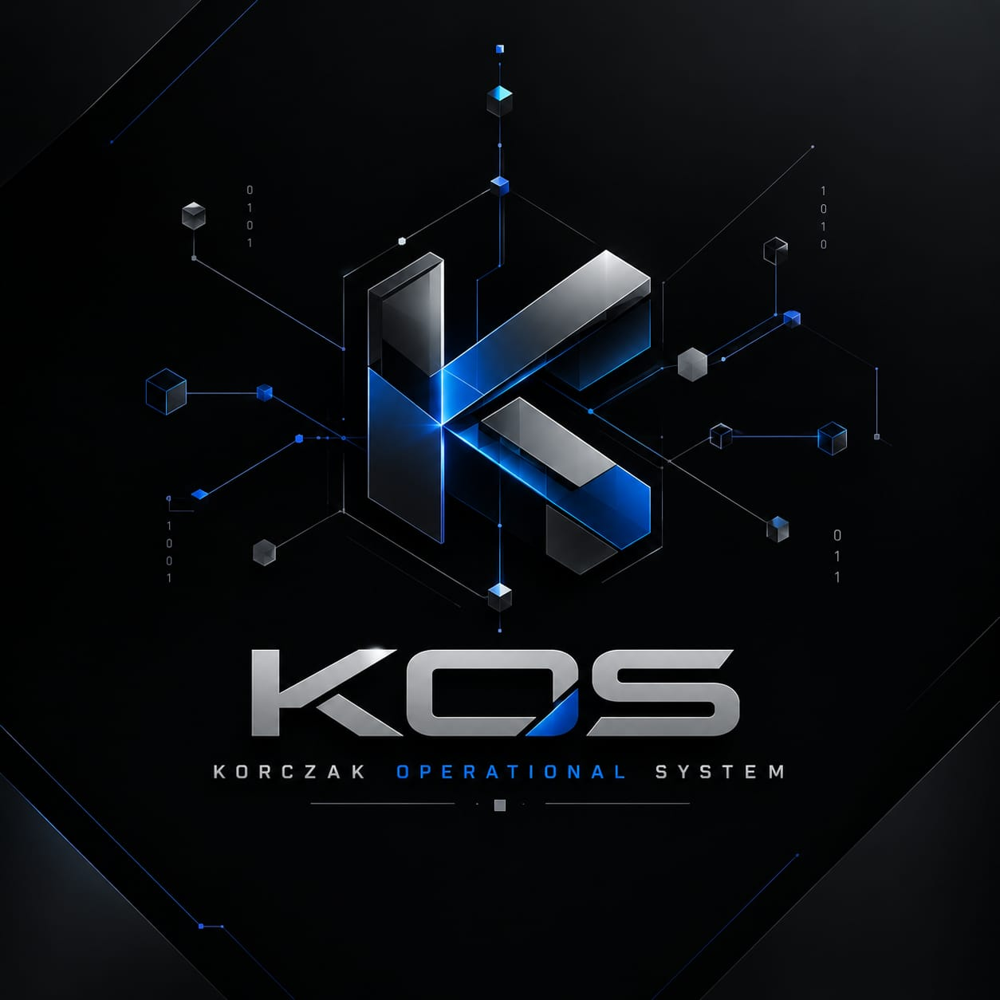
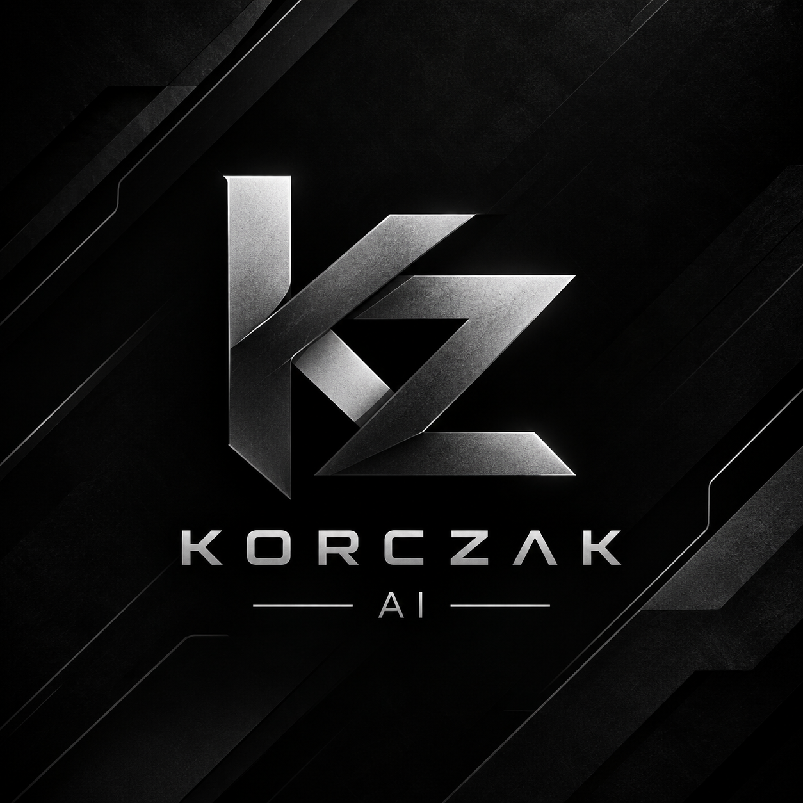

KORCZAK Operations System
Plataforma B2B modular para gestão empresarial, operação, automação, dados e integração futura.
Explorar KOS →Do sistema operacional empresarial a produtos especializados, cada solução tem um papel claro.

Plataforma B2B modular para gestão empresarial, operação, automação, dados e integração futura.
Explorar KOS →
Inteligência artificial como produto independente do KOS.
Explorar →
Ambiente de desenvolvimento integrado da Korczak Technologies.
Explorar →